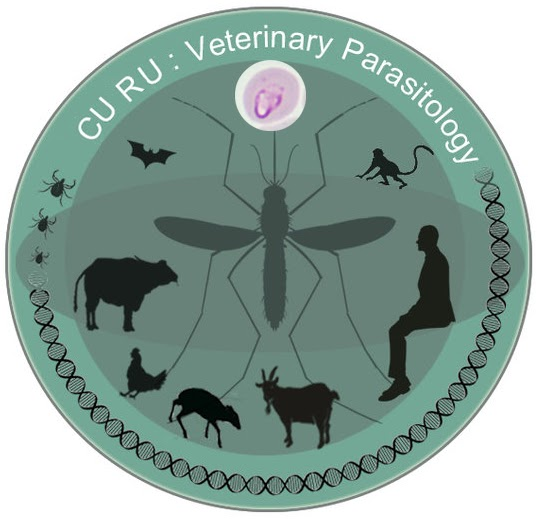

People
Researchers & academic mentorship
My research has developed through academic mentorship and collaborative work in parasitology, entomology, taxonomy, and vector-borne disease research.
Samiullah Soomro, Ph.D.
Postdoctoral Researcher
Faculty of Veterinary Science, Chulalongkorn University, Bangkok, Thailand.
Prof. Morakot Kaewthamasorn, D.V.M., Ph.D.
PhD Supervisor & Current Postdoctoral Mentor
Faculty of Veterinary Science, Chulalongkorn University, Bangkok, Thailand

Click the figure to visit the MK Lab
Collaboration
Research network
I welcome opportunities to collaborate with researchers, students, and institutions on meaningful research projects and scientific publications. I am particularly eager to contribute to review articles and co-authored papers in my areas of research and to build productive, long-term scientific collaborations. Please feel free to get in touch to discuss potential opportunities.